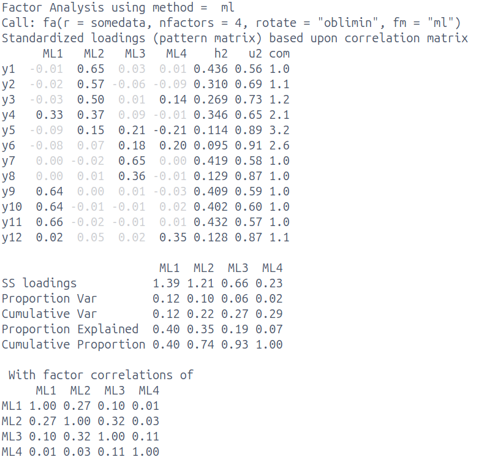

Mock exam: Short answer questions
Get set up
- Create a new .Rmd file for this week’s exercises.
- Save it somewhere you can find it again.
- Give it a clear name (for example,
dapr3_lab10.Rmd).
Q1 - EFA [14 marks]
Below are the results of an analysis conducted on a set of 12 items assessing environmental conscientiousness. Participants are asked to respond to each statement on a 5-point likert scale from “Strongly Disagree” to “Strongly Agree”.
Based on the results and the item descriptions below, provide an interpretation of the factor solution. Your description should include:
- Briefly describe the analysis that has been conducted. [2 marks]
- Comment on the numerical solution of the fitted model. [5 marks]
- Is the selected number of factors suitable, or is it under/over extracted? Why or why not / how can you tell? [2 marks]
- What is a reasonable next step in this analysis? [1 mark] Explain your reasoning. [1 mark]
- Do your best to label/define each factor. [3 marks]
| item | wording |
|---|---|
| y1 | I recycle regularly |
| y2 | I use eco-friendly transportation |
| y3 | I buy sustainable products |
| y4 | I know how to reduce my carbon footprint |
| y5 | Protecting resources matters to me |
| y6 | I care about protecting the environment |
| item | wording |
|---|---|
| y7 | I feel responsible for my environmental impact |
| y8 | I am worried about climate change effects |
| y9 | I know about the harm of single-use plastics |
| y10 | I know how deforestation affects climate change |
| y11 | I know about relevant environmental policies |
| y12 | Wildlife destruction concerns me deeply |
Q2 - SSloadings [6 marks]
Calculate the 6 values missing from the table below: SSloadings [2 marks] and proportion variance [2 marks] & cumulative variance [2 marks].
PC1 PC2
item1 0.90 0.00
item2 0.90 -0.29
item3 0.90 0.30
item4 0.70 0.70
item5 0.81 -0.50 PC1 PC2
SS loadings __ __
Proportion Var __ __
Cumulative Var __ __
Q3 - LMM interpretation [12 marks]
A company that makes “six-minute journals” is interested in finding out whether regular use of their product helps alleviate anger in people who struggle with anger management.
They recruited 200 people who were already enrolled in weekly anger management classes. They gave 100 of those people a journal. Each participant fileld out weekly assessments of anger levels for 10 weeks.
The company has the following data:
ppt: each participant’s unique IDweek: number representing week, ranging from 0 (first week with the journal) to 9 (tenth week with the journal).journal: whether or not someone used a journal, eitherNo(coded as 0) orYes(coded as 1)
They fit a linear mixed model and got the following results:
Linear mixed model fit by REML. t-tests use Satterthwaite's method [
lmerModLmerTest]
Formula: anger ~ week * journal + (1 + week | ppt)
Data: df
REML criterion at convergence: 12665
Scaled residuals:
Min 1Q Median 3Q Max
-4.191 -0.649 0.019 0.619 3.397
Random effects:
Groups Name Variance Std.Dev. Corr
ppt (Intercept) 2.21 1.49
week 1.13 1.06 0.11
Residual 24.52 4.95
Number of obs: 2000, groups: ppt, 200
Fixed effects:
Estimate Std. Error df t value Pr(>|t|)
(Intercept) 9.764 0.327 197.991 29.88 <2e-16 ***
week -0.141 0.119 198.003 -1.18 0.2402
journalYes 0.074 0.462 197.991 0.16 0.8730
week:journalYes -0.467 0.169 198.003 -2.77 0.0062 **
---
Signif. codes: 0 '***' 0.001 '**' 0.01 '*' 0.05 '.' 0.1 ' ' 1Interpret each of the fixed effects, rounding all numbers to two decimal places. You do not need to comment on the statistical significance of each coefficient. [4 marks]
Give the range in which 95% of non-journalling participants’ intercepts are estimated to fall [2 marks], and the range in which 95% of non-journalling participants’ slopes are estimated to fall [2 marks]. Round the bounds of this range to two decimal places.
The correlation between random intercepts and random slopes is 0.11 What does that correlation mean in the context of this study? [1 mark]
For each of the following statements, write “Yes” if it’s a valid conclusion you can draw from the model, and write “No” if it is not.
- People who did journal had increasingly higher anger as the weeks went on. [1 mark]
- In both journalling conditions, anger decreased significantly as the weeks went on. [1 mark]
- Journalling is associated with a significantly greater reduction in anger over time, compared to just taking the anger management classes. [1 mark]
Q4 - LMM [4 marks]
A categorical variable such as group_var can be included in LMM as either:
A lmer(outcome ~ ....... + (1 | group_var) .... or
B lmer(outcome ~ ....... + group_var + ....
How do these differ? You may want to comment on, for example:
- the type of variability that we think
group_varcontributes - what inferential information you get from the model (that is, what hypotheses can you test)
- what groups the model results generalise to